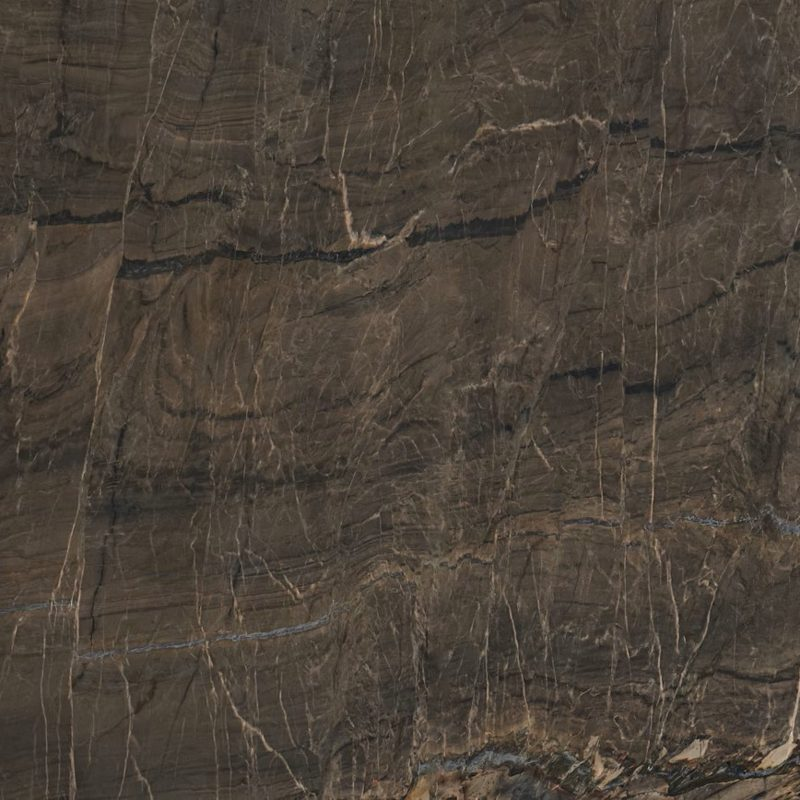
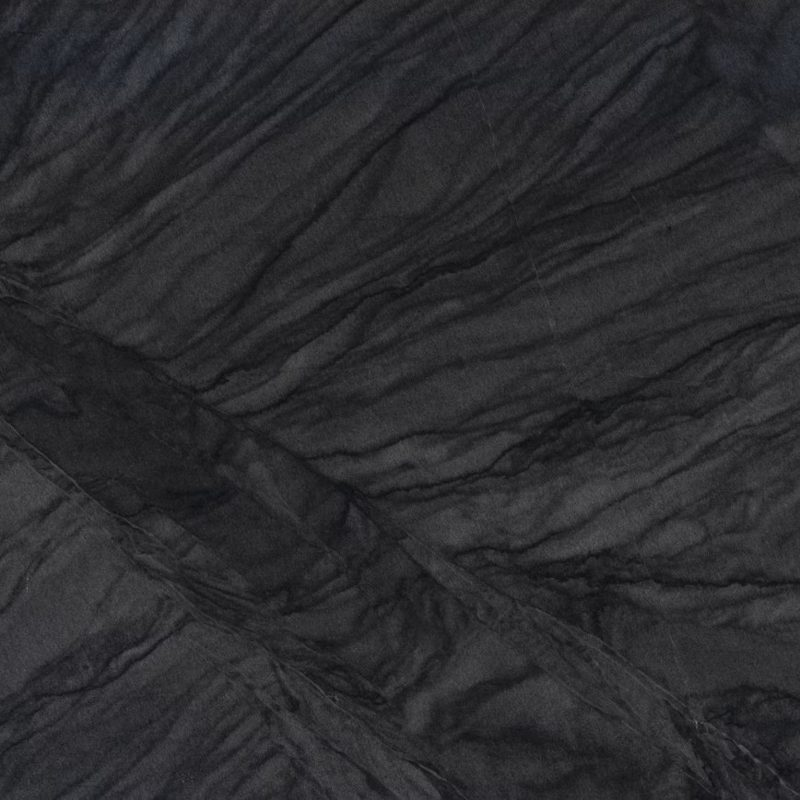
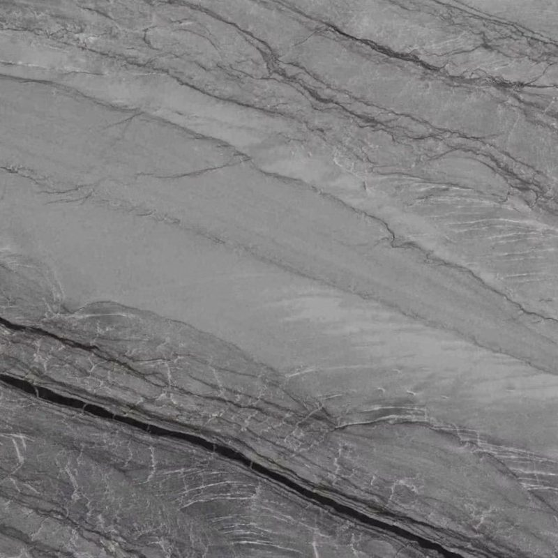
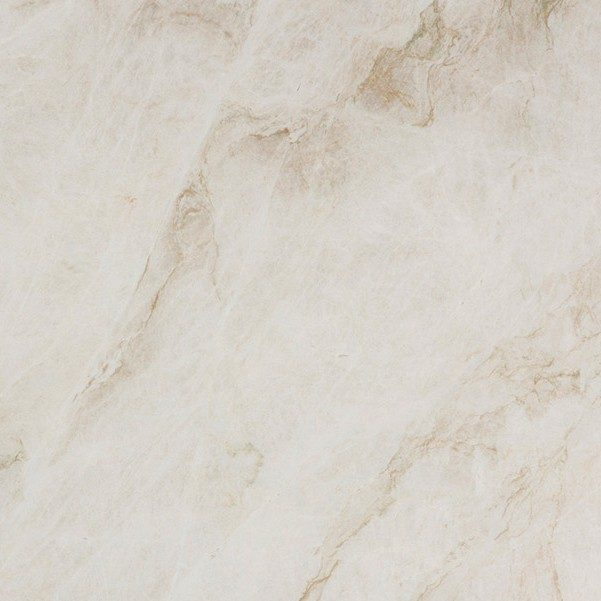
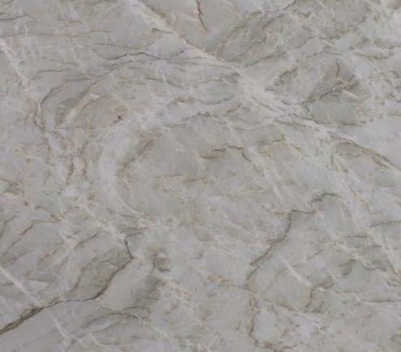
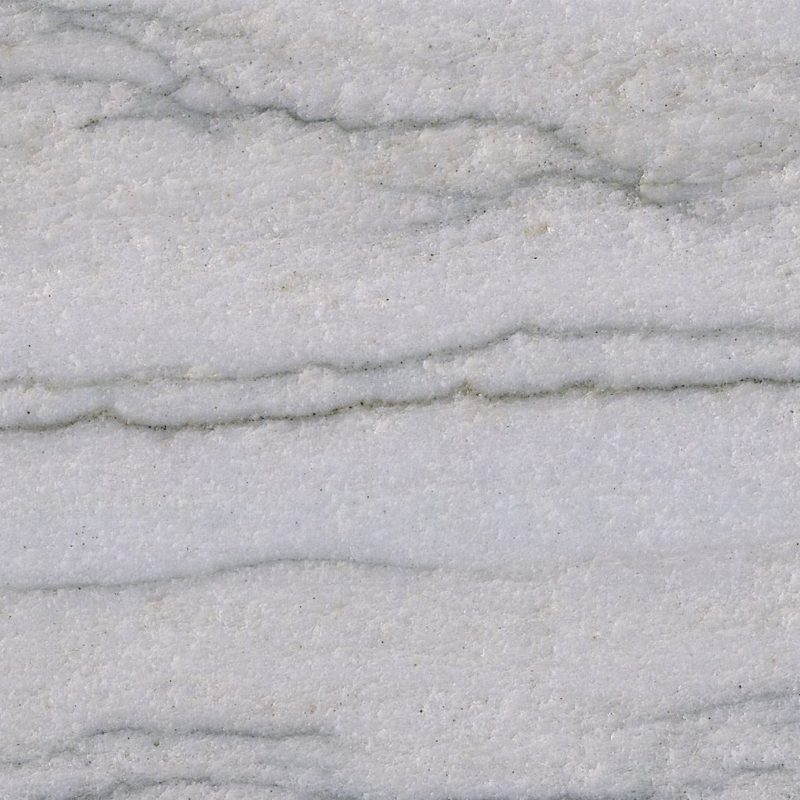
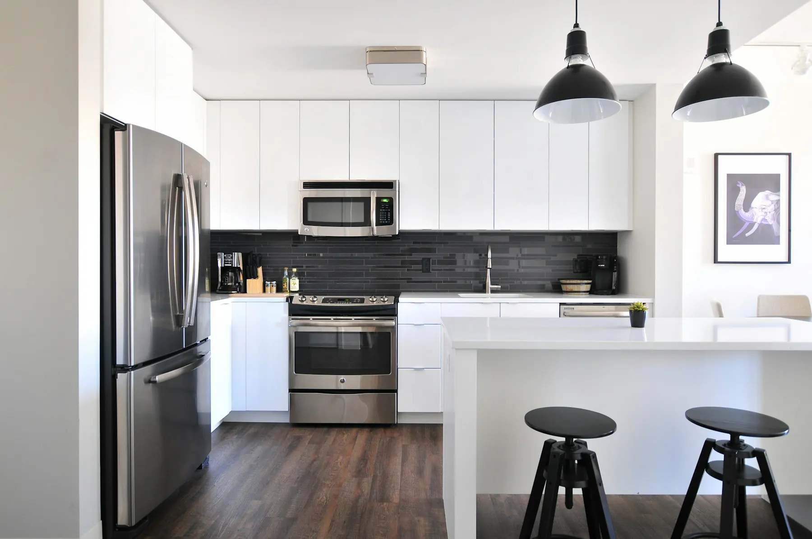

Cosentino — technologie SenSa
Quartzito Sensa: uma pedra natural resistente, protegida em fábrica
A bancada em quartzito Sensa junta duas qualidades raramente associadas: uma das pedras naturais mais duras e uma proteção antimanchas duradoura aplicada em fábrica pela Cosentino. O resultado é uma superfície raiada e única, que se vive no dia a dia quase sem preocupações. Cortamo-la por medida em Mafra.
A bancada em Quartzito Sensa
Sensa é a gama de quartzito premium da Cosentino, protegida de fábrica com o tratamento antinódoas de longa duração Sensa Protect. A pedra mantém o aspeto natural, aguenta tachos quentes, resiste aos UV e risca menos do que o granito. Cada placa é única, com veios próprios da sua pedreira de origem.
Quartzito Sensa
- Polido (Mir)
- Mate (Suède)
- Espessuras 20 mm / 30 mm
- Antinódoas
- Sensa Protect
- Marca
- Cosentino
- Cor estável
- Anti-UV
- Espessuras
- 20 / 30 mm
Acabamentos e formatos
- Polido (Mir)
- Mate (Suède)
- 20 mm · 30 mm
Cores Quartzito Sensa
6 cores disponíveis, que pode também ver ao vivo na nossa fábrica de Mafra, mediante marcação.

NahoaPolido (Mir) · Mate (Suède)Branco-creme com veios cinzentos e dourados.
NiloPolido (Mir) · Mate (Suède)Preto profundo com veios claros delicados.
PlatinoPolido (Mir) · Mate (Suède)Cinzento-platina com ondulações prateadas.
Taj MahalPolido (Mir) · Mate (Suède)Creme quente com veios dourados suaves.
VancouverPolido (Mir) · Mate (Suède)Castanho-acinzentado com veios bege-claro.
White MacaubasPolido (Mir) · Mate (Suède)Branco com ondas cinzento-azuladas.
Ambientes

Quartzito SensaAmbiente de cozinha 
Quartzito SensaAmbiente de casa de banho 
Quartzito SensaAmbiente de bancada
Porquê escolher quartzito Sensa para a sua bancada
Um quartzito sem tratamento já é uma excelente pedra de cozinha. O quartzito Sensa vai mais longe graças ao Sensa Protect, o tratamento antimanchas duradouro da Cosentino: os óleos e as bebidas com cor penetram muito menos, mesmo nas cores claras, onde um quartzito sem tratamento exigiria atenção.
A pedra mantém as qualidades naturais. Aguenta tachos quentes, resiste aos UV com cor estável e risca menos do que o granito. Cada chapa continua única, com os veios próprios da pedreira de origem.
Há dois acabamentos: Mir, um polido luminoso que revela a profundidade dos veios, e Suède, um mate suave e natural. As espessuras de 20 e 30 mm permitem fazer tanto uma bancada fina como uma ilha maciça.
Escolher a cor do quartzito Sensa
Os seis quartzitos Sensa cobrem uma paleta curta, mas muito expressiva.
- Taj Mahal: um creme quente com veios dourados e suaves, talvez o mais fácil de combinar, do carvalho claro ao latão.
- Nahoa: um branco creme com veios cinzentos e dourados, para uma cozinha clara e requintada.
- White Macaubas: um branco percorrido por ondas cinzento-azuladas, mais fresco e gráfico.
- Platino: um cinzento platina com ondulações prateadas, elegante com inox e frentes cinzentas.
- Vancouver: um castanho acinzentado com veios bege claro, acolhedor e discreto.
- Nilo: um preto profundo com veios claros delicados, para uma ilha que se impõe.
Numa chapa de quartzito, o desenho pode variar bastante: aconselhamos validar a chapa antes do corte.
As suas perguntas
Quartzito Sensa ou quartzito sem tratamento: qual escolher?
Ambos oferecem a mesma dureza e resistência ao calor. O quartzito sem tratamento tem uma escolha de cores muito maior, mas exige uma impermeabilização a renovar. O quartzito Sensa reduz a escolha a seis cores e liberta-o dessa tarefa graças ao Sensa Protect. Numa cor clara numa cozinha familiar, o Sensa é muitas vezes a solução mais tranquila.
O quartzito Sensa serve para uma cozinha com muito sol?
Sim. A Cosentino indica que o quartzito Sensa resiste aos UV com cor estável, o que faz dele uma boa escolha junto a grandes envidraçados ou numa marquise. É uma vantagem face às superfícies à base de resina, que podem alterar-se ao sol. Para uma cozinha totalmente exterior, estudamos o seu projeto caso a caso antes de aconselhar.
Vamos falar do seu projeto
Um especialista analisa o seu pedido e responde em 48 horas úteis, com uma proposta por medida.